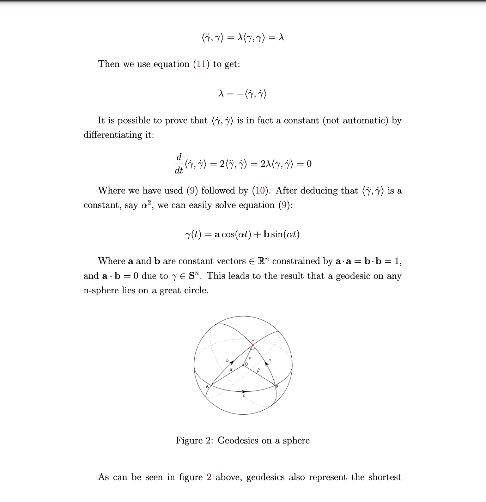
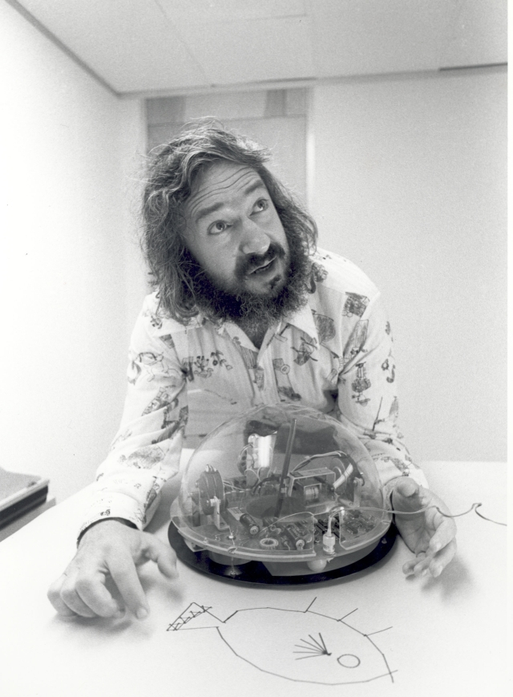

Emmy
Computational Physics, Beyond the Glass
Sam Ritchie, MIT Probabilistic Computing Project
Strange Loop 2023
…
Transmitting Culture
Culture of Math & Physics
Vision!
LOGO's Microworlds
SICM & FDG


Euler-Lagrange Equations
"What could this expression possibly mean?"
\[{\frac{d}{d t} \frac{\partial L}{\partial \dot{q}}}-\frac{\partial L}{\partial q}=0\]
(defn Lagrange-equations [L]
(fn [w]
(- (D (comp ((partial 2) L) (Gamma w)))
(comp ((partial 1) L) (Gamma w)))))
\[D\left(\left(\partial_{2} L\right) \circ \left(\Gamma[w]\right)\right) \\ -\left(\partial_{1} L\right) \circ \left(\Gamma[w]\right)=0\]
Steps
- Build a visual CAS that can bring physics to life
- Do it in a way that seeds the culture
- and runs anywhere (browser, robots…)
- Make it collaborative
- Build a community, beyond the glass
Current State
scmutils by GJS
Einstein's Field Equations
(deftest einstein-field-equations-test
(with-literal-functions [R rho p]
(let [basis (e/coordinate-system->basis spacetime-sphere)
g (FLRW-metric 'c 'k R)
T_ij ((e/drop2 g basis) (Tperfect-fluid rho p 'c g))
[d:dt d:dr] (e/coordinate-system->vector-basis spacetime-sphere)
K (/ (* 8 'pi 'G) (expt 'c 4))]
(testing "first challenge (89s)"
(is (= '(/ (+ (* -8 G pi (expt (R t) 2) (rho t))
(* -1 Lambda (expt c 2) (expt (R t) 2))
(* 3 (expt c 2) k)
(* 3 (expt ((D R) t) 2)))
(expt (R t) 2))
(simplify
((((Einstein-field-equation spacetime-sphere K)
g 'Lambda T_ij)
d:dt d:dt)
((point spacetime-sphere)
(up 't 'r 'theta 'phi))))))))))
"If a system is built as a ball of mud, it is easy to add more mud.
One organization for a ball of mud is a system erected on a substrate of generically extensible procedures."
~ Hanson and Sussman, Software Design for Flexibility(+ 1 2)
3
(+ 1/2 1/3)
5/6
(+ 1 'x)
(+ 1 x)
(reduce + (map square ['x 'y 'z]))
(+ (expt x 2) (expt y 2) (expt z 2))
(D (+ sin cos))
#function[clojure.lang.AFunction/1]
((D (+ sin cos)) 'x)
(+ (cos x) (- (sin x)))
(->infix
(simplify
((D (square [+ *])) 'x 'y)))
"down(2 x y² + 2 x + 2 y, 2 x² y + 2 x + 2 y)"
(defn unit-circle [angle]
[(cos angle)
(sin angle)])
(defn mag [thing]
(sqrt (square thing)))
#'user/mag
((D (mag unit-circle)) 'theta)
(* (/ 1 (* (sqrt (+ (* (cos theta) (cos theta))
(* (sin theta) (sin theta)))) 2))
(+ (* (cos theta) (- (sin theta)))
(* (cos theta) (- (sin theta)))
(* (sin theta) (cos theta))
(* (sin theta) (cos theta))))
(simplify
((D (mag unit-circle)) 'theta))
0
Code as Literature
"programs must be written for people to read, and only incidentally for machines to execute."
~ Hal Abelson, Structure and Interpretation of Computer Programs
MathBox
What's next?
We're hiring!